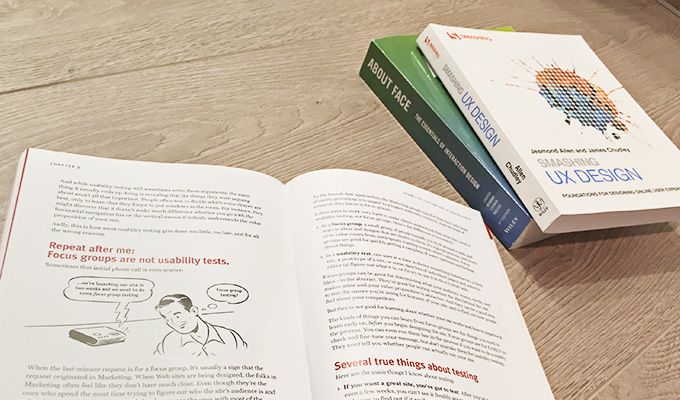

UX design books you should read in 2023
The most useful and practical UX design books to help UX designers create seamless user experiences.
The UX design process is becoming an increasingly important aspect of creating quality website applications and software products. There are heaps of different UX design books out there with a myriad of techniques and methods that are important for us to know and use as UX designers.
It can sometimes be confusing figuring out the right UX design practices to use, so I’ve put together a list of some of the best UX design books I’ve read. I’d love to hear what your favourites are and how they’ve helped you improve your design process.
My UI design book
I’ve also written my own UI design book. It’s a logic-driven approach to design intuitive, accessible, and beautiful interfaces using quick and practical guidelines. It contains the most important things you need to know about interface design, usability, and accessibility. It’s helped hundreds around the world and has 5-star reviews, so I’d encourage you to check it out.

My top 3 UX design books
I’d suggest reading these first as they cover the essentials: a comprehensive overview of the UX life cycle processes and methods, a framework to streamline the UX process, and the fundamentals of psychology in UX design.

1. The UX Book
By Rex Hartson and Pardha Pyla
This UX design book offers a comprehensive, practical overview of the UX life cycle processes and methods. Human computer interaction techniques are distilled into an easy-to-understand format and the authors do a great job of showing readers how to gather requirements, sketch ideas, create wireframes, build prototypes and evaluate designs. While not a short read, this book is a solid resource for UX and interaction designers at all experience levels and I definitely think it’s worth having on your bookshelf.
For designers looking for a comprehensive and practical read about all things UX design.
2. Lean UX: Applying Lean Principles to Improve User Experience
By Jeff Gothelf and Josh Seiden
Lean UX provides a framework and structure for an effective UX design process. The book encourages us to move towards a more iterative, outcomes-based design process rather than relying on classic and sometimes unnecessary deliverables. The three underlying principles of Lean UX are: (1) removing waste from the design process; (2) improving the efficiency of the team; and (3) shifting your mindset away from relying on a single expert to come up with the solution and instead using rapid experimentation to learn what works best. A great read with a good balance of theory, practical advice and case studies.
For designers looking to streamline their UX design process using practical rapid prototyping techniques.
3. Laws of UX
By Jon Yablonski
Published recently in 2020, Laws of UX is a collection of key psychological principles to help UX designers build more intuitive, human-centred products and experiences. As designers, many of us don’t have a background in psychology or behavioural science. And yet, it’s our job to understand how users behave so that we can build products that suit their needs.
This book helps us learn the fundamentals of psychology that relate to UX design with real examples from familiar apps and websites. Principles like Fitt’s Law, Hick’s Law, Pareto Principle, Peak-end Rule and Jakob’s Law are just a few of the many psychological principles covered in this book. A basic understanding of human psychology is a must-have for any UX designer, and Laws of UX is a quick and easy way to achieve that.
For all designers who don’t have a solid background in psychology and how it intersects UX design.
Other great user experience design books
Once you’ve read the top 3 books, I’d suggest picking one of the below books based on the area you’re interested in learning more about.
Smashing UX Design
By Jesmond Allen and James Chudley
Smashing UX Design is a great introductory book for anyone new to user experience design and working in project teams. The first half of the book concentrates on the UX design process, while the second part deconstructs the user experience of specific website elements.
It’s a very practical resource that provides a solid outline of popular UX design processes, tools and techniques – from conducting initial research and defining requirements to creating wireframes and prototypes. I liked that the authors used examples of real-life projects throughout the book and I noticed that there was a focus on e-commerce websites. Overall, it’s a great read for UX designers looking for practical solutions to use in team projects.
A great introduction to the UX design process with real-life examples for those new to the design field.
Don’t Make Me Think, Revisited
By Steve Krug
Don’t Make Me Think was first published way back in 2000 and since then it has been one of the most popular and best-loved books on usability. The author is friendly and witty and uses a lot of practical, common-sense examples and illustrations throughout the book. If you’ve read the original book you’ll already know the main concepts, but the new edition does include some updated examples as well as new a chapter on mobile usability.
The book basically consists of a bunch of usability rules based on simple human psychology that will help you create a better experience for your users. Don’t Make Me Think is a staple for anyone in the website business; it’s quick and fun to read and I guarantee it will help you understand your users better.
A quick read about the fundamentals of usability that’s a must for any designer.
The User Experience Team of One
By Leah Buley
If you’re working in an organisaition that doesn’t have much of a focus on UX design, this is the book that will help you validate the importance of user experience. The User Experience Team of One briefly outlines UX philosophy before diving into a bunch of practical UX techniques and tools. Planning, discovery, research, design, testing and validation methods are all covered with real world use cases.
Buley also provides practical ways to get buy-in from your organisation to implement UX processes. It sounds ludicrous, but many companies hire UX designers without having an understanding of what we do or how we can help. I know from experience that it can be tough to have your voice heard as a designer, especially in a big company. This book is definitely a great ally in your fight to bring UX process to your organisation.
For designers looking for practical ways to get buy-in from your organisation to implement UX processes.

The Elements of User Experience
By Jesse James Garrett
A great initial UX design book for those interested in learning about UX design. The Elements of User Experience cuts through the sometimes complex process of creating an intuitive user experience and includes clear explanations and great illustrations. It’s not a very comprehensive book on UX design methods or techniques but it does provide a great outline of what user experience design is and what it involves. This book is a clear, concise primer on UX design best suited to those new to the industry.
A clear and concise introduction to UX design for those new to the design field.

Sketching User Experiences: The Workbook
By Saul Greenberg, Sheelagh Carpendale, Nicolai Marquardt and Bill Buxton
Most UX Design books focus on the principles of UX design, this one however focuses on the skills of sketching a user experience. You’ll learn a bunch of practical techniques to sketch wireframes, storyboards, interactions and animations. It’s a very practical workbook that will come in handy for any UX designer looking to better express their ideas through sketching.
The book also touches on collaborative sketching which is great to brainstorm ideas in a team environment. As a designer, I find that nothing beats good old pen and paper to quickly get lots of ideas on a page. This book will definitely inspire you to step away from your computer and sketch more often.
A practical workbook for UX designers looking to improve their sketching skills.

A Project Guide to UX Design
By Russ Unger and Carolyn Chandler
A UX design book that covers the core elements of the user experience design life cycle and also identifies the different stakeholders and how they’re involved. There’s quite a lot of information on the logistics of dealing with the business side of things, including required documentation and meetings. I would say that this book is better suited to less experienced designers and project managers looking for an overview of the basic UX design process. If you’re already in the UX field, the authors do refer to quite a few useful external resources that you can look into for more detail. Overall a great introduction to the UX design life cycle.
An overview of the UX design life cycle and how it fits into an office environment for those new to the design field.

Agile Experience Design
By Lindsay Ratcliffe and Marc McNeill
If you’re a designer moving from a traditional waterfall background into an agile project work flow, this book will help you overcome the problems with that transition. The first part of the book is basically advocating the advantages of agile UX design and the rest of the book outlines how to create user experiences in an agile project team. The book is presented well, is easy to read, and is a great resource for designers looking to work in an agile team environment.
For designers looking to move from a traditional waterfall work flow into an agile one.

Universal Principles of Design
By William Lidwell, Kritina Holden and Jill Butler
This is basically a dictionary of user experience design principles. The book is divided into 125 principles. Each design principle takes up 2 pages, with theory on the left page and a practical example on the right. The descriptions are concise and well written, making it a very easy read. It covers many of the theories and design principles that we use everyday but may have forgotten the name of including: Fitts’ law, golden ratio, Hick’s law, progressive disclosure, rule of thirds and many more. Definitely a handy cheat sheet to have nearby when you need to pull out some fancy theories to back up your designs.
A quick and concise reference of UX design principles with examples.
I hope you’ve found these UX design books helpful and I’d love to hear of any others that you think are worth reading. I’ve also put together a list of my favourite UI design books. Happy reading.
As an Amazon Associate I earn from qualifying purchases.